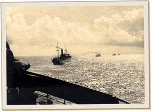

|
j
a v a s c r i p t |
December 21, 1941

Japanese Transports Head for Luzon
Sunday without softball is a dull day indeed. Sirens at 1025 caught Ma and Maurice at church during a short raid. I listened to the news wondering about the heroic defense of Hongkong and the lull in Singapore and Manila. The absence of news of a U.S. rescue made listening to KGEI irksome. Went to the Menzi’s in the afternoon and got skunked at croquet — first game in two months. Nichols raided again yesterday for the sixth time. Our situation looks hopeless. In addition to ruling the air, Japanese ships now ply our waters with impunity. Long-envisaged defense plans relying on a 17 to 18-day rescue by the U.S. Navy were shortsighted. Our subs are hopeless too as a defensive force: two transports and one destroyer is their two-week score. Tokyo recently announced we had 20 subs near their waters. They should be down here! MacArthur got his 4-Stars; a Tribune picture shows him receiving a congratulatory embrace from Quezon. The latter made his usual eloquent speech describing our predicament and hardships. Osmeña kept his usual silence. Sign of the times in the Tribune: One baby born at the outbreak of war emits several short blasts when it’s hungry and one long wail when it’s had enough (the air-raid and all-clear sirens). |
|
|
|
|